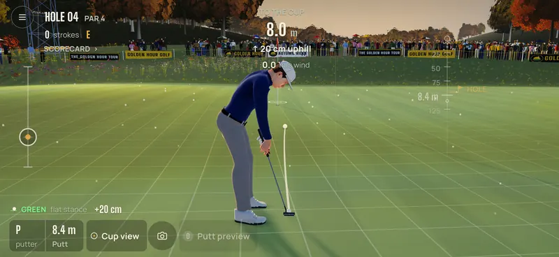

Golden Hour Golf
Support
Tips, antwoorden en een directe lijn met de mensen die het spel maken.
Neem contact op
Schrijf in het Nederlands of Engels. Vermeld je iPhone-model, de iOS-versie en, als het kan, een screenshot. We lezen elk bericht.
Vragen
Spelen
Hoe sla ik?
Leg je rechterduim in de swingzone aan de rechterkant van het scherm. Trek recht omlaag om de kracht te bepalen: hoe verder je trekt, hoe harder je slaat. Swipe daarna omhoog door de startlijn om te slaan.
Een soepele opwaartse beweging in het juiste tempo geeft de volle balsnelheid. Wijk je zijwaarts af, dan open of sluit je het clubblad en krult de bal (fade, draw, slice of hook). Na elke slag laat het analysepaneel zien wat je swipe deed. De korte rondleiding onder Zo speel je in het hoofdmenu laat het je zien op het echte scherm.
Hoe richt ik? (de richt-trackpad)
De linkerhelft van het scherm werkt als een trackpad. Veeg naar links of rechts om je lijn te draaien, omhoog of omlaag om de afstand te veranderen (op de green: het tempo). Langzaam vegen is fijn afstellen, snel vegen is grof. Je hoeft de bal of de baan niet aan te raken.
Tik op Verkennen om de camera boven je landingsplek te laten vliegen; ook daar werkt de trackpad. Naar de hole zet je richting terug.
Hoe werkt het korte spel?
Dicht bij de green kiest het spel een techniek en club voor je: putt, bump and run, chip, pitch, flop of, vanuit een bunker, splash. De strook linksonder toont de andere mogelijkheden met hun carry en rol; tik erop om te wisselen. Het spel houdt het eindpunt vast en verlegt de landingscirkel voor je.
Voor je slaat zie je de landingscirkel, de rollijn en waar de bal moet stoppen.
Hoe lees en sla ik putts? (de puttslider)
Op de green laten de hellingskaart in kleur en het raster zien waar de bal breekt. De slider langs de linkerrand van het scherm beweegt de camera vloeiend van gehurkt lezen, via het standaardbeeld, tot recht van boven. Je kunt ook twee vingers gebruiken, of de knoppen Achter, Lezen en Boven. Het spel onthoudt je favoriete hoek.
Richt en kies het tempo met de trackpad en swipe dan om te putten. Je krijgt per putt één puttpreview die laat zien hoe de lijn breekt. In de carrière verdien je die met de vaardigheid green lezen. Wil je altijd een rollijn zien, zet dan de puttlijn aan in Instellingen (Puttlijn aan).
Kan ik de balvlucht versnellen of overslaan?
Ja. Tik terwijl de bal in de lucht is om door te spoelen. Dubbeltik, of tik op Overslaan, om meteen te zien waar de bal stopt. Dat werkt ook bij putts en herhalingen. Wil je dat altijd? Zet dan Automatisch doorspoelen aan in Instellingen.
Voortgang en Game Center
Wordt mijn voortgang bewaard?
Ja, automatisch en alleen op je iPhone: je ronde, carrière en toernooien. Sluit je de app midden in een ronde, dan heet hij je welkom terug en kun je verder. Carrière-evenementen en toernooien worden nooit weggegooid.
Er is geen online account, dus voortgang wordt niet tussen toestellen gesynchroniseerd. Verwijder je de app, dan is je voortgang weg. Bij het volledig terugzetten van een iPhone-back-up (iCloud of computer) komen appgegevens normaal gesproken mee terug.
Hoe werken Game Center en de weekuitdaging?
Log in bij Game Center in de app Instellingen van iOS. Dat hoeft niet; het hele spel werkt ook zonder.
Elke maandag om 00:00 UTC begint een nieuwe weekuitdaging: dezelfde holes, wind en hetzelfde licht voor elke speler ter wereld. Je hebt één officiële ronde per week; die telt vanaf de eerste tee en moet binnen de week af zijn. Oefenen onder dezelfde omstandigheden mag zo vaak je wilt; oefenrondes tellen nooit. Daarnaast zijn er leaderboards voor je beste eerste negen en je beste 18 holes op Autumn Ridge, en 21 achievements.
Offline? Je scores wachten op je iPhone en worden verstuurd zodra Game Center weer beschikbaar is (een weekscore die zijn week mist, vervalt). Vrienden uitdagen gaat via de Game Center-uitdagingen van Apple en vraagt iOS 26.
Hoe deel ik een hoogtepunt?
Na een hole-in-one, albatros, eagle, chip-in, een gemaakte putt van meer dan 10 meter, een birdie op de laatste hole of een toernooizege verschijnt een kleine knop Deel. Je kunt ook delen tijdens elke herhaling, en de knop Hoogtepunten in de rondesamenvatting toont de laatste hoogtepunten van je sessie.
Kies staand (9:16, voor Stories, Reels en Shorts) of liggend (16:9). Het spel maakt op je iPhone een clip van 6 tot 10 seconden ("Clip voorbereiden…") en opent het iOS-deelvenster. Wil je hem bewaren, kies dan Bewaar video: iOS vraagt één keer toestemming om aan Foto's toe te voegen. Voorlopig kun je een clip maken zolang je nog op de hole bent waar de slag gespeeld is.
Instellingen en toestellen
Welke talen zijn er?
English, Nederlands, Deutsch, Français, Español en 日本語. Het spel volgt de taal van je iPhone. Je kunt ook alleen voor dit spel een taal kiezen in de app Instellingen van iOS (Golden Hour Golf → Taal), of in het spel onder Instellingen → Taal. Het tv-commentaar is in het Engels.
Ik hoor geen geluid. Wat nu?
Golden Hour Golf volgt de stille modus van je iPhone (de belschakelaar of de Actieknop), zoals de meeste games. Zet de stille modus uit en het volume omhoog.
Het spel speelt prima samen met je eigen muziek of podcasts: de spelmuziek zwijgt zolang er andere audio speelt. In Instellingen zet je Effecten, Publiek en sfeer, Commentaar en Muziek los op Uit, Laag, Middel of Vol.
Welke iPhones worden ondersteund?
Golden Hour Golf vraagt iOS 17 of nieuwer en is gemaakt voor iPhone, liggend. We raden een iPhone 13 of nieuwer aan. Het spel kiest automatisch een kwaliteitsniveau bij je chip; iPhone 15 Pro en nieuwer krijgen het hoogste niveau.
Wordt je telefoon warm? Zet in Instellingen "Publiek en tribunes" op Weinig of Uit; dat ontlast je iPhone in toernooien.
Kost het spel iets? Zit er reclame in?
Golden Hour Golf is een gratis download met de volledige baan Autumn Ridge. Er zijn geen advertenties en er is geen account, en de huidige versie heeft geen in-app-aankopen.
Wat gebeurt er met mijn gegevens?
We verzamelen geen persoonsgegevens. De app stuurt alleen anonieme gebruiksstatistieken (zoals "er is een ronde uitgespeeld"), gehost in de EU, en die zet je uit via Instellingen → Privacy. Lees de privacyverklaring voor de details.
Bètatesters
Hoe meld ik een fout via TestFlight?
Het snelst: maak in het spel een screenshot (zijknop en volume omhoog). Tik op het voorbeeld, daarna op Deel bètafeedback, schrijf er kort bij wat er gebeurde en verstuur. Of open de TestFlight-app, kies Golden Hour Golf en tik op Stuur bètafeedback.
Crasht het spel, dan vraagt TestFlight of je het crashrapport wilt delen; zeg dan graag ja en beschrijf wat je aan het doen was. Noem ook je iPhone-model. Mailen kan ook: info@ai-adviesbureau.nl.